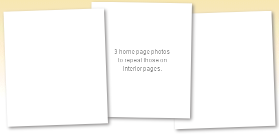

|
| Contact us about your next project kaiser@kaisermfginc.com 651.458.8880 |
|  | Quality
| ||
Contract SewingOur highly skilled team has the expertise, capacity and dedication to take on industrial sewing projects of all sizes and scope. Attention to detail and a proven quality control process ensure high quality. more » |
Design and
|
Cutting ServicesOur state-of-the-art fabric cutting system ensures high productivity, reduces fabric waste and achieves rapid turnaround times for our customers. In addition, other contract sewers purchase cutting services from KAISER. more » |
|

|
KAISER Manufacturing Inc. 94 21st Street Newport, MN 55055 |
Phone: 651.458.8880 Fax: 651.458.8885 kaiser@kaisermfginc.com |
Quality Textile Products Made in the U.S.A. |